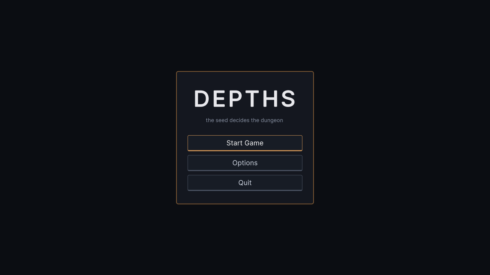
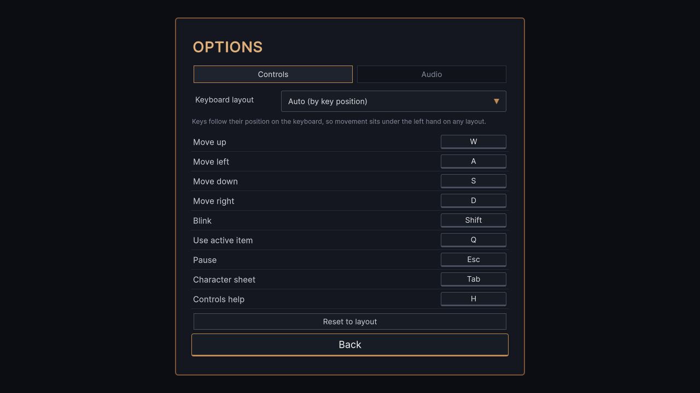
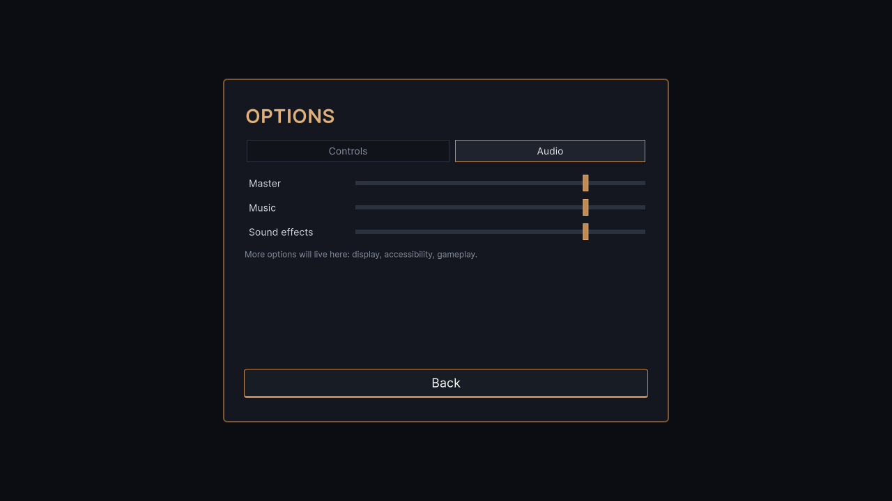
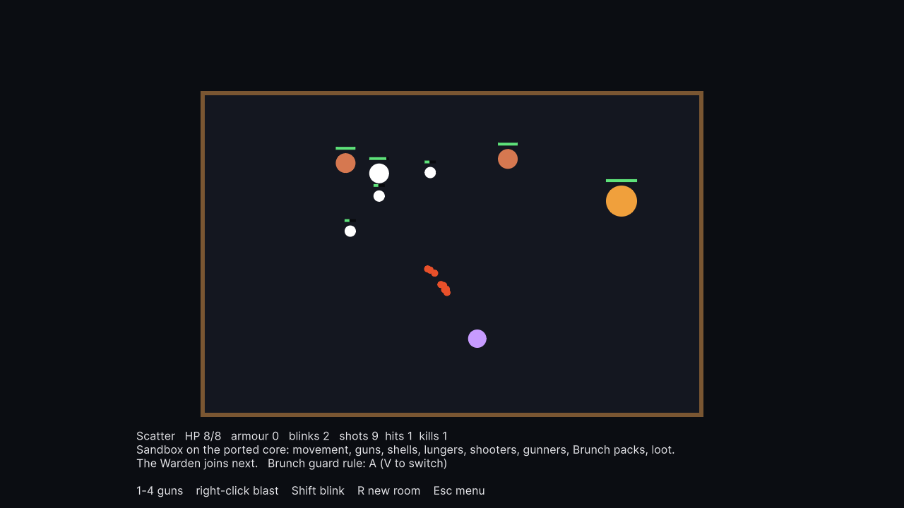
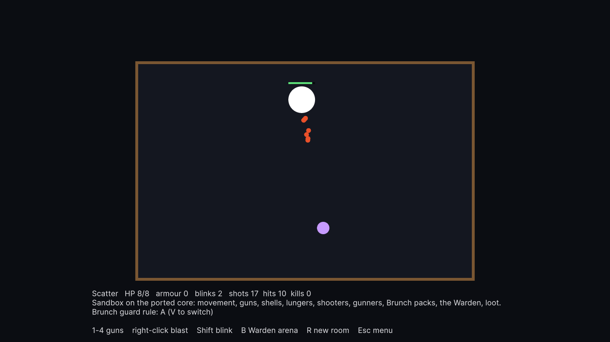
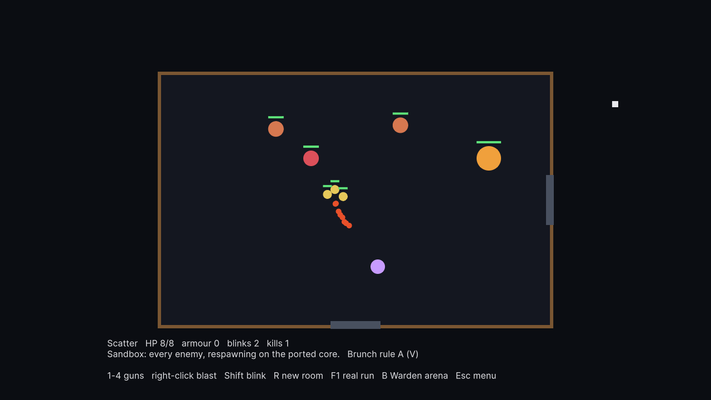

Depths: autonomous session, 2026-10-06
At a glance
Gate (.\verify.ps1) | green JS 246/246 at 3 viewports, C# 388/388, parity 0 diffs, 148 parity rows, 47/47 constants. About 3 min; it used to time out. |
|---|---|
| Bugs fixed | 11 in the game, 7 in the port (including a missing momentum speed bonus and a double-rolled trait), 3 in the gate tooling. Each comes with a test that fails on the old code. |
| Playtesting | A new bot plays 18 full runs in about 50s. It's deterministic and produces an A/B report. node tools/playtest.js |
| Unity | playable game Start Game plays a real seeded run: rooms, doors, keys, waves of every enemy, the Warden, and the way down. It runs on the ported core, plus a menu, key binds, volume and sound. F1 opens a sandbox and B a Warden arena. |
| Port | New this session: the projectile phase and the blast (everything except the hook), the four guns, every enemy including the Warden, the blink, and the room-to-room game. Since then, items and stats (item rooms offer items; Q uses them) and the hook were ported too, also checked against the game. In Unity, Esc pauses, a death shows the run, and descending shows the floor. What is left is real art and rendering, the 60 Hz switch, and small leftovers listed in STATUS. Each is checked against recordings from the running game. |
1. Housekeeping and the gate
- Deleted junk (
temp_check.txt, a duplicate report, a stale page copy);REPORT.mdmoved todocs/history/. - The gate could not go green: it waited 30s for a 5-minute suite (Playwright options passed in the wrong position), its audits looked for a server on a port it never started, and any stderr from node aborted it before it could report.
- The one red test was real:
Sound.whenAudible/whenIdlenever polled (a.then(tick)was lost in the last commit), so a suspended audio context hung for ever.
2. Code sweep: what was wrong
| Bug | What a player saw | Fix |
|---|---|---|
| Boss tell never drained | The Warden's wind-up flash stayed lit for the whole fight after the first volley (5693 of 6705 idle ticks), so it warned of nothing. | Countdown to each shell, off between volleys. |
Projectile loop break | When a bolt landed, every older projectile (enemy shells too) froze for that tick. | continue |
| Boss wall outlived the boss | Kill the Warden while its wall is up and the exit stays shut until you shoot 5 statues. | The wall crumbles with it. |
| Tab / H did not pause | Open the character sheet mid-fight: input blocked, room still running. Measured 5 HP lost while reading. | Any input-taking overlay stops the sim ("Pausing IS this sheet" was the design). |
| Title seed ignored | The title shows a seed and says it decides the dungeon, then any key starts a different one. | Starts the seed on screen. |
| Item room duplicates | Both pedestals could offer the same item when the rarity tier was thin. | Top-up excludes the first pick. |
| 4 wrong texts | Tin Cup / Iron Ribs said "two hearts" (they give one), Vigor and Momentum blurbs contradicted the code. | Text corrected (numbers left for you: see design notes). |
| Port drift | C# lunger HP 24.3 vs game 20.25; Brunch speeds stale; seeds above 2^32 wrapped instead of refused. Tests had pinned the stale values by hand. | Fixed; values re-read from the game. |
Also removed: dead code (duplicate checks, an undeclared global, unused helpers, a duplicate FIXES key).
Found, not fixed (recorded for the port session)
- C# aiming model (
Intercept.cs) is an older version of the JS one; its test checks a stale baked hash. - C#
TickRoomwould descend every tick (exit stays under the player) once rooms are ported; door helpers are stubs. - C# per-tick allocations in
AssemblePacks(Dictionary, List per guard) break the Unity no-GC rule. - Two C# tests are tautologies (
TickOrderTestsphase log,ProjectileRecordTests). - JS: Brunch target scan throttle is dead (runs every tick); stale
packSlotskews a shrinking wall; the boss can spawn on the player; body contact hitbox is offset 20px from the shot hitbox. - Items that do nothing: Intelligence (Brass Compass) is read by nothing; Hunter's Mark "shows what is on the floor" is a no-op.
3. Playtesting, and how to use it
node tools/playtest.js --label current plays 6 seeds × 3 profiles (novice / average / skilled) for up to 20 sim-minutes each.node tools/playtest.js --root ab/baseline --label baseline plays the backed-up build.node tools/playtest-report.js baseline current writes playtest/report.html: side-by-side numbers, damage and healing sources, per-floor tables, thumbnails.--query brunch=B plays a URL variant.
By hand: open
ab/baseline/depths.html and depths.html next to each other; variants are URL flags.
It is deterministic (two runs of the same build: 0 of 18 runs differ), so an A/B difference is the change, not noise.
What the first playtest says about the game
- Nobody dies. All three profiles, novice included, clear 6 floors in 20 sim-minutes; 0 deaths in 18 runs.
- Healing matches damage. About 13 HP of damage per floor against 11 HP of healing, mostly armour drops. Floors usually end at full health, so damage within a floor does not carry.
- Skill barely matters. Novice takes about twice the damage of skilled and still never dies: the difference is invisible to the player.
- Over an hour, runs do end. With 60 sim-minutes per run, bots reach floors 13–18. Two of 18 died, both novice; the rest were still alive at the limit. The difficulty does climb, but slowly. A full run is long.
- Boss fights get longer with depth: a median of 33s on floor 1, 44s on floor 8, 60s on floor 13 and 70s on floor 17. The Warden's health grows with no cap, so deep fights risk becoming a damage sponge. (These long fights first showed up as "stuck" runs. The bot now counts damage dealt as progress, so they no longer do.)
- Caveat: the bot sees every body perfectly and never panics. Read these as relative numbers.
4. Features
4.1 Brunch guard: A, B and A+ side by side done
The leash in the comments never existed: packs guard their shooter wherever you are (A). All three options now play from the same build, chosen by URL; the default is still A, so tests, parity and the C# port are untouched.
| Open | Behaviour | Bot: deaths / dmg per floor / Brunch share |
|---|---|---|
depths.html?brunch=A | Wall stays on its shooter, always (current). | 0 / 10.6 / 25% |
depths.html?brunch=B | Leash: more than 420px between you and its shooter, the pack drops the guard and chases. | 1 / 11.8 / 30% |
depths.html?brunch=A+ | Keeps guarding; once you leave the shooter's range the wall walks out toward you as one formation, herding you back into the line of fire. | 0 / 10.4 / 26% |
My read: B is the most dangerous and the simplest to understand ("they come for you if you run").
A+ only changes things for a player who disengages, which the bot never does, so it has to be felt by hand:
retreat across a big room from a shooter with a pack. Reports: playtest/report-brunch-A-vs-brunch-B.html,
playtest/report-brunch-A-vs-brunch-Aplus.html.
4.2 Unity skeleton and main menu done
The project is in unity/ (Unity 6000.3.25f1). Unity compiles Depths.Core from the same files the C# tests build, as a local package; one Unity test checks that it generates exactly the same floor as the JS game for a known seed. Scenes, the audio mixer and settings are generated by an editor script, so they can be rebuilt instead of hand-edited.


- Key binds: the default, Auto, follows key position, so WASD lands on ZQSD on AZERTY with no setup. The QWERTY, AZERTY and QWERTZ presets bind by the letter printed on the key, and Dvorak goes by position. Click any bind to change it. Everything is saved.
- Volume: Master, Music and SFX sliders drive a real AudioMixer with those three channels. They're saved, and dragging a slider plays a preview sound.
- To play it: build with the command in
docs/STATUS.md, or openunity/in the Unity Hub and press Play inAssets/Depths/Scenes/MainMenu.




4.3 Sound engine started
SoundEngine.Play("hit", pan) plays any of the game's 12 sounds. They're rebuilt by a small synthesizer from the exact JS definitions, then pooled and routed through the SFX channel. The tests compare each one with the JS game's own render: pitch matches within 20% for 11 of the 12 (the exception is explained in the test). Next step: add a compressor on Master. The JS game has one, and the sounds may feel spikier without it.
4.4 The port, and a playable sandbox big step
| Ported this session | Checked against the game by |
|---|---|
| Projectile phase, and the right-click blast (all but the hook) | 12 banked cases, plus "older shells keep moving", the loot draw and the boss wall; 4 recorded blasts (a crowd sharing the damage, a contact hit, a target past the wall, a kill) |
The four guns (Weapons.cs) | 48 shots: 4 seeds × 4 guns × 3 aims, every pellet to 1e-6, RNG draws exact |
| Held fire | The tick each gun fires on: Bolt every 89, Scatter 154, Beam 13, Voidball 56 |
| The blink (and the recharge) | 3 recordings of 800 ticks each: position, velocity, lagged hitbox, i-frames, grace, boost, charges. This found a real port bug: momentum never added to the C# player's speed, so under pressure the port was slower than the game. The tests had all run in empty rooms, where momentum stays 0. |
The lunger (Movement.cs, TickBodies) | 4 recorded fights, 200–420 ticks each, compared every 10 ticks to 1e-6 |
| Shooter and gunner (standoff, intercept aim, aim sweep, dodge) | 5 recorded fights, including a moving, swerving player and a lunger in the line of fire |
| Brunch packs (wall slots, chase, self-spend), with all three guard rules A, B and A+ | 5 recorded fights, including one placed right at the B leash distance so the 420px value is pinned |
| The room-to-room game: start a run, doors (open, shut by a fight, sealed until a key works the lock), the transition, entering a room and spawning its wave, rooms that remember their contents, descending | 6 seeds from startGame through walking into the first normal room: every random draw and every spawned body matches the game. Found on the way: the C# rolled each ranged body’s trait twice and from the wrong table, and generated floors from a separate random stream |
| The Warden (volley with a tell per shell, sweep, the wall of statues, three phases) and the spawn routine | 3 recorded fights of 2,500–16,000 ticks, the long one so every slot of the phase-3 move bag is drawn |
The Unity Game scene is now a sandbox room on that core. You move and shoot with your saved binds, switch guns with 1–4, and lungers hunt you down and lunge while a shooter and a gunner hold their distance and fire leading shots, and a Brunch pack walls them off. Press V to switch the Brunch rule between A, B and A+ while you play. It is the same decision as the JS URL flags, so you can feel it in either build. They can kill you, and their kills drop hearts and armour you can pick up. Press B for a Warden arena: the boss volleys (a ring closes on it before each shell), sweeps and, below two thirds health, calls a wall of statues. Anything not ported yet refuses to run instead of quietly misbehaving.
5. Decisions waiting for you
- Brunch guard: A, B or A+? Play each URL above. Once chosen, the winner becomes the default in JS
(and goes into C# when
tickBodiesis ported), the flag is removed, and the JS gets itsjs-finaltag. - Heart values: Tin Cup and Iron Ribs were written as "two hearts" and give one. I fixed the text. If two was the intent, the numbers (
heal_self2 to 4, Iron Ribs vigor 2 to 4) are the change, and that is a balance call. - Difficulty: no bot profile dies in 6 floors; healing (mostly armour drops) roughly equals damage per floor. Candidates to playtest, in order of how little they change: fewer armour drops; heal less on later floors; let the depth ladder keep rising after its cap. Each is a one-line variant I can add behind a flag like the Brunch one.
- Run length and the Warden: a strong player is looking at an hour or more per run, and boss fights double in length by floor 17. Consider capping boss health growth, or adding a "win" floor (the code already has an unused win path). Either could be a flag to playtest.
- Sound: listen to the menu sounds (rebinding a key, the volume sliders). If they feel harsh, a Master compressor is the fix.
- Items that promise and do nothing: Brass Compass (Intelligence is read by nothing) and Hunter's Mark's "shows what is on the floor". Either give them their effect in the Unity build, or change their text now.